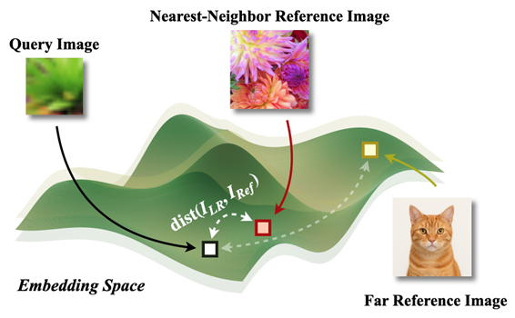
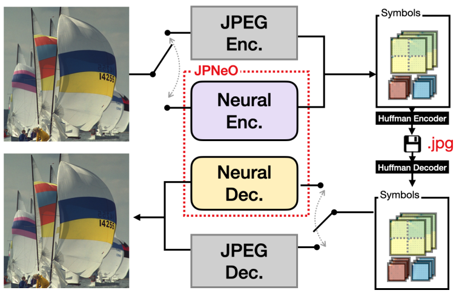
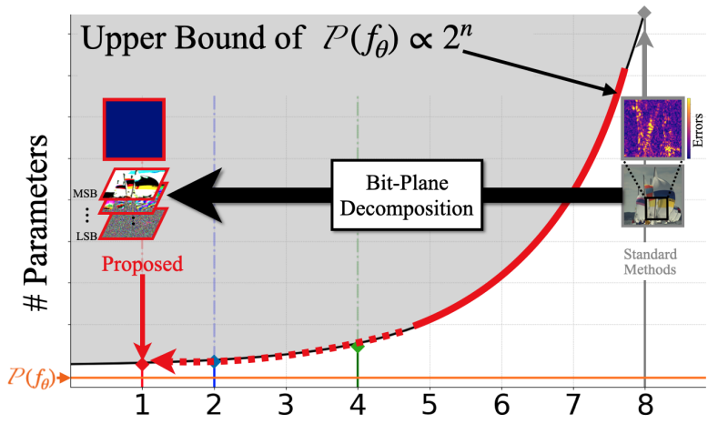
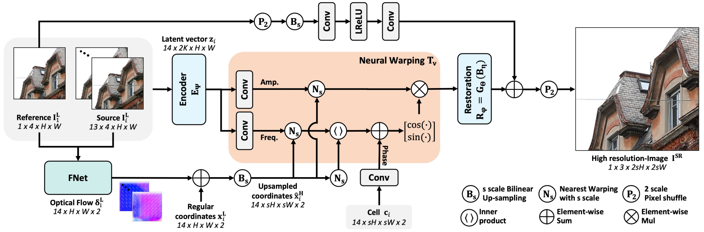
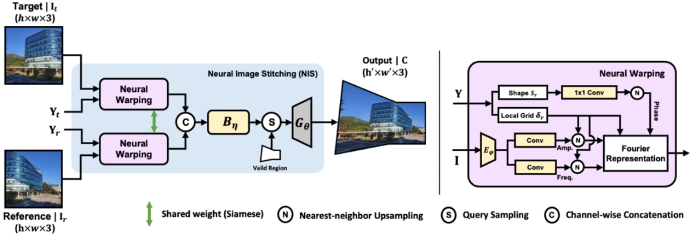
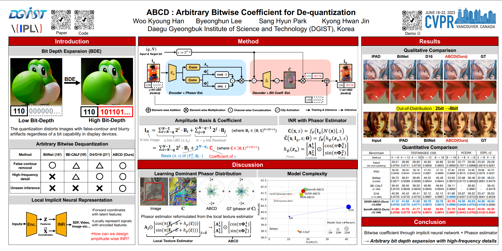
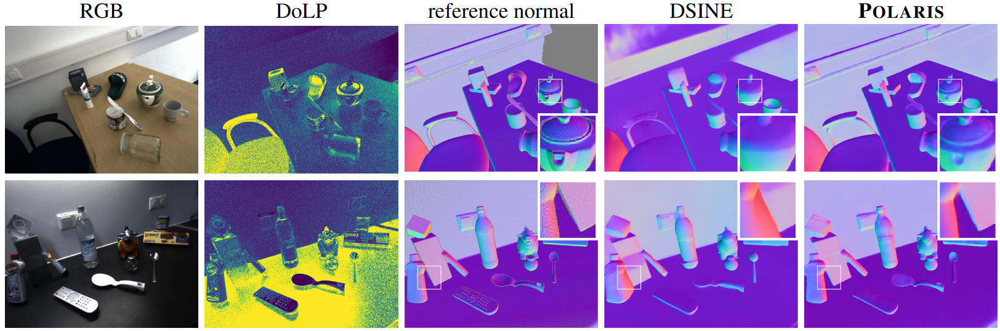
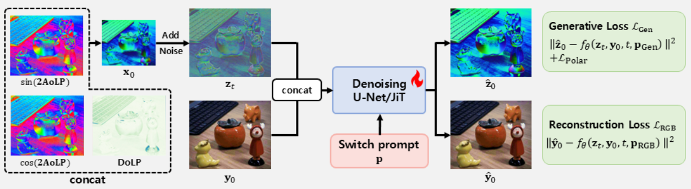
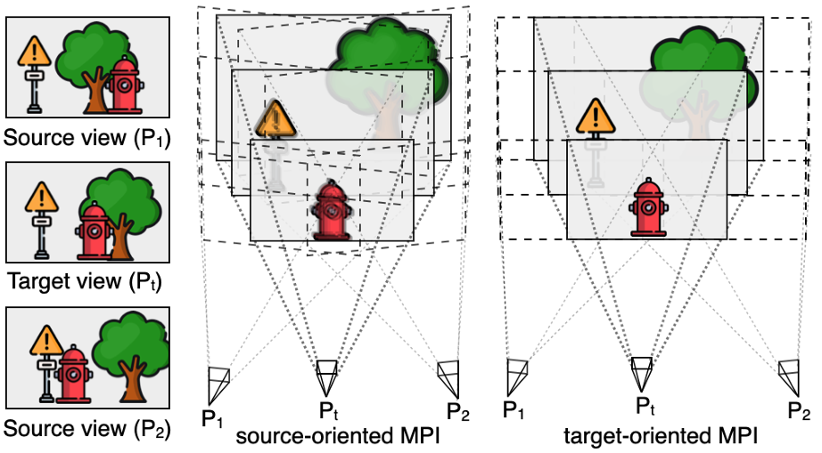

My research starts from one question: when the input no longer carries enough information to
restore, where should the missing evidence come from? I have pursued four answers:
retrieved reference images, the polarization of light, the
bit-plane structure of a signal, and neighboring frames and viewpoints.
I have applied them across image super-resolution, compression/quantization restoration, and depth
estimation. A recurring principle in my work is to verify that the borrowed evidence is actually
trustworthy, at the retrieval and filtering stage, before it reaches the model.
Feel free to send me an e-mail if you want to have a chat! Contact:
byeonghun_lee@korea.ac.kr
ReAL: Reference-to-Image (R2I) Aware Latent Diffusion for Image Super-Resolution
Byeonghun Lee,
Hyunmin Cho,
Sunghoon Im†,
Kyong Hwan Jin† European Conference on Computer Vision (ECCV), 2026.
Paper / Website (TBD) /
Code (TBD)
We introduce ReAL, a reference-based latent diffusion model for
super-resolution that removes the text branch entirely and conditions on a single retrieved
reference by injecting its key/value pairs into self-attention, avoiding the semantic drift caused
by over-reliance on a text-to-image prior.
Bronze Medal, Best Paper Award at IPIU 2026.

Reference-based Super-Resolution via Image-based Retrieval-Augmented Generation Diffusion
Byeonghun Lee*,
Hyunmin Cho*,
Hong Gyu Choi,
Soo Min Kang,
Iljun Ahn,
Kyong Hwan Jin† IEEE/CVF International Conference on Computer Vision (ICCV), 2025.
Paper
/ Code
We introduce iRAG, which turns reference selection into a retrieval problem:
a 16-bit neural hash finds the nearest reference 64× faster than VGG features, a generative
model augments a sparse database, and a variance-based filter removes hallucinated references
before training.

JPEG Processing Neural Operator for Backward-Compatible Coding
Woo Kyoung Han*,
Yongjun Lee*,
Byeonghun Lee,
Sang Hyun Park,
Sunghoon Im†,
Kyong Hwan Jin† IEEE/CVF International Conference on Computer Vision (ICCV), 2025.
Paper
/ Website
/ Code
We replace the JPEG encoder and decoder with neural operators that stay fully backward-compatible
with existing JPEG files, so image quality and chroma preservation improve without changing the
deployed pipeline.

Towards Lossless Implicit Neural Representation via Bit Plane Decomposition
Woo Kyoung Han,
Byeonghun Lee,
Hyunmin Cho,
Sunghoon Im†,
Kyong Hwan Jin† IEEE/CVF Conference on Computer Vision and Pattern Recognition
(CVPR), 2025.
Paper
/ Website
/ Code
The model size an implicit neural representation needs for lossless fitting grows exponentially
with bit precision. Decomposing the signal into bit planes turns fitting into per-bit binary
decisions, lowering that bound and achieving 16-bit lossless representation and
quantization down to 1.58-bit ternary weights.

BurstM: Deep Burst Multi-scale SR using Fourier Space with Optical Flow
EungGu Kang,
Byeonghun Lee,
Sunghoon Im†,
Kyong Hwan Jin† European Conference on Computer Vision (ECCV), 2024.
Paper
/ Code
BurstM replaces deformable-convolution alignment with optical flow for
one-to-one correspondence and merges the aligned features in Fourier space, so a single model
handles ×2/×3/×4 without per-scale retraining.

Implicit Neural Image Stitching with Enhanced and Blended Feature Reconstruction
Minsu Kim,
Jaewon Lee,
Byeonghun Lee,
Sunghoon Im,
Kyong Hwan Jin IEEE/CVF Winter Conference on Applications of Computer Vision
(WACV), 2024.
Paper
/ Code
NIS extends arbitrary-scale super-resolution to image stitching, estimating
Fourier coefficients through neural warping to recover the high-frequency detail that learning-based
stitching usually blurs away, and blending color and alignment mismatches in latent space.

ABCD: Arbitrary Bitwise Coefficient for De-quantization
Woo Kyoung Han,
Byeonghun Lee,
Sang Hyun Park,
Kyong Hwan Jin IEEE/CVF Conference on Computer Vision and Pattern Recognition
(CVPR), 2023.
Paper
/ Code
ABCD restores low-bit images to arbitrary bit depth with an implicit neural
function queried by bit coordinates, removing the contour artifacts that appear when legacy
content is shown on high-bit displays.

POLARIS: Polarimetric Spin-2 Equivariant Adapters for Metric Monocular Depth
Byeonghun Lee,
Seonhwa Kim,
Sunho Lee,
Kyong Hwan Jin Under review at ICLR, 2027.
The angle of linear polarization is defined against a sensor-fixed axis, so it rotates twice as
fast as the camera. We bake this spin-2 rotation symmetry into the encoder and
inject it into a pretrained backbone, cutting depth error (AbsRel) by 23.8% on mirrored and
transparent surfaces.
Samsung Electronics industry collaboration.

Efficient RGB-to-Polarization Estimation via Residual-Shifting Generative Models
Byeonghun Lee*,
Seonhwa Kim*,
Pureum Kim,
Jee Eun Kim,
Sunho Lee
Under review at ICLR, 2027.
Instead of diffusing from noise, we shift only the residual between RGB and polarization along a
short trajectory, reaching 4-step inference without distillation, 26× faster
(2,252ms → 85ms) at higher angle-image SSIM.
Samsung Electronics industry collaboration.

ToMS: Target-Oriented Neural MPI Stitching for Novel View Synthesis
Byeonghun Lee,
Jaedeok Kim,
Sunghoon Im,
Kyong Hwan Jin Under review at WACV, 2027.
ToMS re-orients multiplane images to the target camera before generation and
merges them per depth plane with neural warping instead of a weighted sum, rendering novel views
in 1.3s without the per-scene optimization 3DGS requires.
M.S.–Ph.D. Integrated, Electrical Engineering
| Korea University
Mar 2022 - Present
Research: Image Restoration, Depth Estimation & Generative Models
Advisor: Prof. Kyong Hwan Jin GPA: 4.38 / 4.5
B.S. in Convergence | DGIST
Mar 2017 - Feb 2022
School of Undergraduate Studies GPA: 3.21 / 4.3
Synthetic Polarization Data Generation from RGB Images & Polarization-Based Precise
Depth Estimation
Samsung Electronics, Production Engineering Research Institute
(Mar 2026 – Present)
Leading student researcher. Built a model that generates polarization images from RGB inputs and
a model that leverages them to improve monocular depth estimation, including in-house capture of
an RGB–polarization stereo dataset.
Hallucination Mitigation in Video Understanding Models
Samsung Research
(Dec 2025 – Present)
Built a graph-based structured representation of video content and applied first-order logic
constraints over the graph to detect and suppress hallucinated outputs in video-language model
responses (+20%p video QA accuracy on two public benchmarks).
User-Preference-Based Image Quality Enhancement
Samsung Research
(Jun 2024 – May 2025)
Developed diffusion-based methods for reference-guided style transfer and low-quality image
restoration; the resulting work was accepted at ICCV 2025.
Cognitive Reverse-Haptics Reproduction System Lab
Basic Research Laboratory (BRL), National Research Foundation of Korea
(Feb 2023 – Feb 2024)
Developed signal-processing algorithms to convert real-world tactile data into digital signals,
and designed a Verilog-based hardware demonstration.
Food Classification Algorithm for Caloric Intake Analysis
Pinset Healthcare
(Aug 2022 – Jul 2023)
Developed food classification and calorie estimation algorithms from user-captured, in-the-wild
food images, delivered as a working application demo.
Deep Learning Algorithm for Bacteria Detection
THE WAVE TALK
(Mar 2022 – Aug 2022)
Developed an image-based classification algorithm to identify bacteria species and concentration
levels from microscopy images under a low-data regime.
Bronze Medal, Best Paper Award, Workshop of Image Processing and Image
Understanding (IPIU), Korea, 2026
Apparatus and Method of Recovering Image Using Arbitrary Bitwise Coefficient Estimation for
De-quantization
Korea Patent Application No. 10-2023-0111027 (filed
Aug 24, 2023) · related paper: ABCD (CVPR 2023)
Lossless Implicit Neural Representation via Object Signal Quantization and Bitwise Decomposition
Korea Patent Application No. 10-2025-0151831 (filed
Oct 20, 2025) · related paper: Lossless INR (CVPR 2025)
Synthetic Polarization Data Generation and Polarization-Based Depth Estimation
(Samsung Electronics collaboration) 2 Korean patent applications pending · 1
international patent application pending


{kind=link}